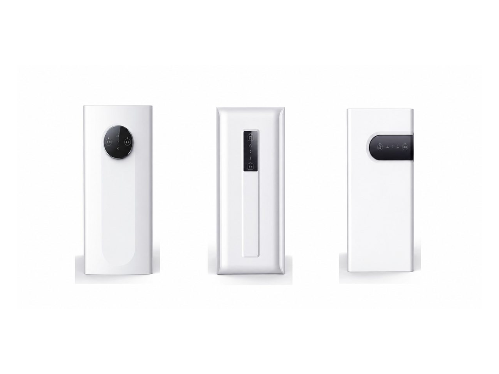
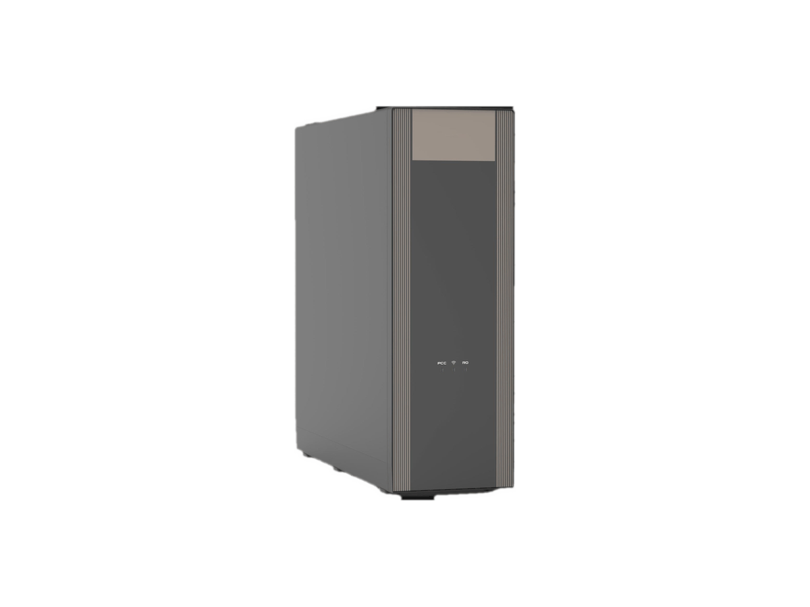

厨下式RP-U07
400–600 GPD 厨下式 RO 净水器
SKU: RP-U07
起订量：询价时确认

厨下式 RO 系统
配即热龙头及冷水功能的 RO 系统 (W10)
RP-U02 — 配即热龙头及冷水功能的 RO 系统. 关键规格： RO 产水量 1000 GPD. 规格按型号及订单确认。
电压／频率可按目标国家配置，其他配置按订单确认。
W10 产品视频。
ROPureOEM 目录中的 9 行规格。
| RO 产水量 | 1000 GPD |
|---|---|
| RO 产水流量 | 2.6 L/min |
| 额定净水量 | 4000 L |
| 加热方式 | 龙头即热；温度可调 |
| 制冷方式 | 双芯片半导体制冷；6°C |
| 尺寸 | 457 × 148 × 437 mm |
| 净重／额定功率 | 16 kg / 2200 W |
| 电压／频率 | 按目标国家配置 |
| 其他配置 | 按订单确认 |
规格来源于 ROPureOEM 目录。尚未确认的数值标注为“按订单确认”，不发布未经确认的参数。